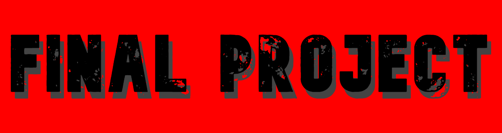

|  |
Final Project
Welcome to my Final Project page. Here, you'll see the final project that I created.Me and my partner, Herik, coded Piano Tiles. (We didn't invent piano tiles, just coded our own simple version of it). On the main screen, splash screen, there are two button, start and instructions. You can click on the start button to go ahead and start playing. If you don't know how to play, click on the instructions button and read that. Then, the start button in the instructions page to start playing. Or just read this paragraph you are reading. Once you have clicked on start, you will see three buttons, which are three levels: easy, medium, hard. All are the same expect the harder levels are faster which makes it harder. Once you click on the one you want to do, it will begin. Tiles randomly will come from the top and go down. You have to click on them before they reach the bottom. When you do, it will turn black, give you a point, and play a sound. If don't click the tile and it reaches the bottom, the game is over. You can see your score on the top left and will increase as you get more points and you can also see it on the game over screen. Click on restart to play again or to choose a different diffculty. You can also look at this video on how to play.